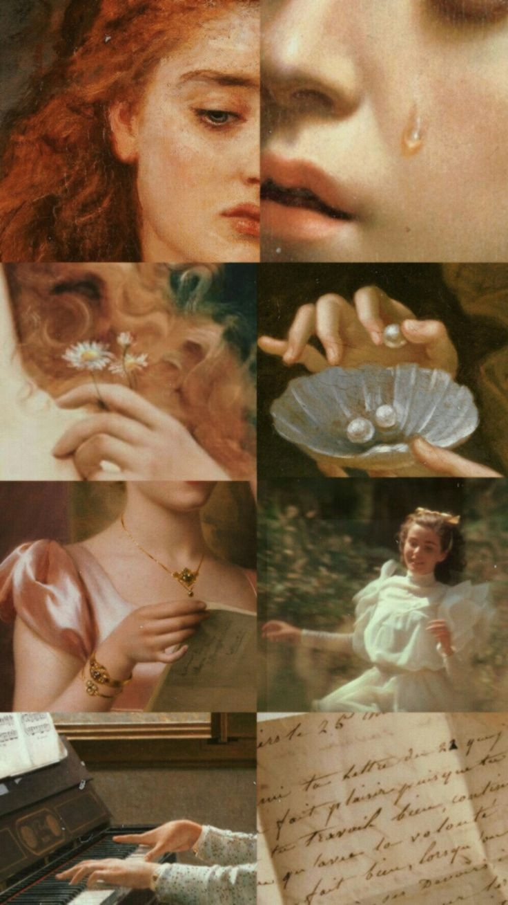

L'art est une activité, le produit de cette activité ou l'idée que l'on s'en fait, qui s'adresse délibérément aux sens, aux émotions, aux intuitions et à l'intellect. On peut affirmer que l'art est le propre de l'humain ou de toute autre conscience, en tant que découlant d'une intention, et que cette activité n'a pas de fonction pratique définie. On considère le terme « art » par opposition à la nature « conçue comme puissance produisant sans réflexion », et à la science« conçue comme pure connaissance indépendante des applications »
Effectivement, les définitions de ce concept varient largement selon les époques et les lieux, et aucune d'entre elles n'est universellement acceptée. Ainsi, pour Marcel Mauss, « un objet d'art, par définition, est l'objet reconnu comme tel par un groupe ». C'est pourquoi les collections de productions artistiques peuvent être classées et appréciées diversement selon les cultures, les auteurs, les institutions et les époques.
|
En Europe, depuis la fin du xviiie siècle, ce terme recouvre principalement les produits dits des « beaux arts » tels que la sculpture, l'architecture, les arts graphiques (dont la peinture ou le dessin), et aussi la musique, la danse, la poésie (à prendre au sens classique du terme, le mot poésie désignant à la fois la poésie lyrique, qui correspond au sens moderne de la poésie, la poésie tragique, c'est-à-dire le théâtre et la poésie épique) et la littérature. On y ajoute depuis, parmi d'autres, l'image en mouvement (le cinéma, la télévision, l'art numérique), le spectacle vivant (le théâtre, le mime), la photographie, la bande dessinée, et, plus largement encore, la mode, bien que celle-ci soit plus couramment associée au domaine de l'artisanat de par son usage et sa fonctionnalité. La classification des arts n'est toutefois pas universelle et rechercher une classification unanime semble impossible, voire un anachronisme. Cette conception de l'art comme activité autonome, comme production par des artistes d'objets que l'on s'accorde à trouver beaux d'après une préférence de goût, |
 |
date des xviiie et xixe siècles. Mais on considère souvent que l'art moderne et contemporain ont délaissé le cantonnement aux seules notions de beau ou de style intemporel pour plus généralement chercher à interpeller voire 'déranger' l'observateur, par exemple par la transgression ou la rupture. Au xxie siècle, on assiste à la fois à la prolifération de la notion d'art (absorbant les civilisations anciennes, intégrant différents supports et obligeant à parler d'« arts », le tout avec des productions en expansion planétaire exponentielle[réf. nécessaire]) et en même temps à son dépassement par la civilisation du tout-écran, qui mêle tout. Un tel phénomène incite à donner des repères et à ne pas appliquer la notion occidentale d'« art » à l'ensemble de ce qui a une visée esthétique sur tous les continents. Pour ce faire, il importe d'établir la chronologie et la géographie des productions dans une histoire générale de la production humaine |